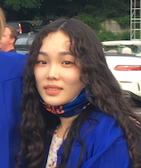

Jason Sevilla: Jason is a first-year graduate student at Cornell working on fast blue optical transients.
Current Team Members


Maggie Li: Maggie is a senior at Cornell majoring in physics with a minor in astronomy. Her research with Professor Ho uses Markov Chain Monte Carlo methods to constrain the origins of afterglows with no observed gamma-ray burst counterparts. In her free time, she likes to draw, play fighting games, and hang out with her cat.

Jada Vail: Jada is a junior at Cornell double majoring in physics and math. Her research is on broad-lined Ic supernovae.
Alumni

Joshua Grajales: Joshua began studying Astronomy and Computer Science at Wesleyan University. At Wesleyan, he worked with Dr. Meredith Hughes, where he compared dynamical mass estimates of gas-bearing debris disk host stars with those from stellar evolutionary models. In the summer of 2023, he joined Dr. Anna Ho at Cornell University where he worked towards developing an optical transient detection tool. Outside of research and academics, Joshua enjoys playing soccer, video games, working out, and expanding his culinary palette and skills with family and friends. Joshua is currently attending Columbia University studying operations research.

Kailai Wang: Kailai is a 4th-year undergrad at Cornell majoring in physics and math and minoring in computer science. He worked on performing photometry and cataloging optical observations of gamma-ray bursts (GRBs) with the Palomar 60-inch telescope. Outside of research, he enjoys badminton, singing, and hanging out with friends.